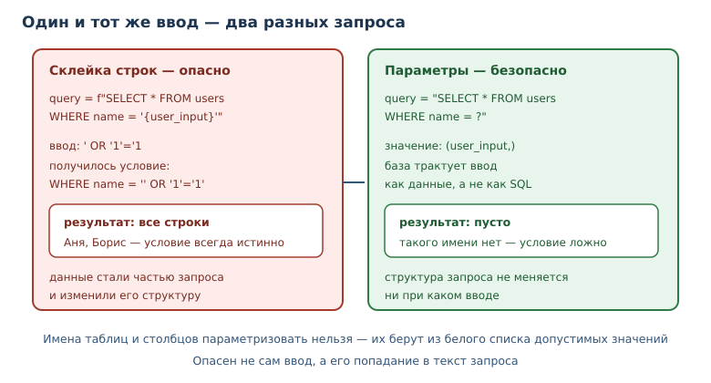
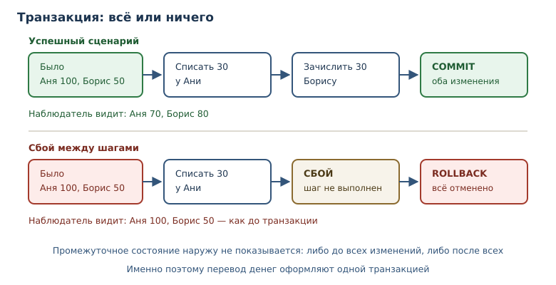

Данные: SQLite, SQL и сериализация
Как хранить структурированные записи в базе, писать запросы, защищаться от инъекций и обмениваться данными через форматы.
В этой главе
Пока данных немного, хватает JSON-файла. Когда записей становятся тысячи, появляются вопросы, на которые файл не отвечает: как найти нужную строку, не читая всё, как обновить одну запись, не перезаписывая остальные, как гарантировать, что связанные изменения применятся вместе. Ответ — база данных.
Python поставляется со встроенной SQLite: полноценной реляционной базой, которая хранится в одном файле и не требует отдельного сервера. На ней удобно изучать SQL-запросы, транзакции и защиту от SQL-инъекций. А сериализация в JSON и CSV остаётся нужна для обмена данными между программами и для резервных копий.
36.1 Что вы сможете после этой главы
- описывать записи таблицей и писать запросы на SQL;
- открывать соединение с базой и выполнять запросы через
sqlite3; - использовать параметризованные запросы и объяснять, почему склейка строк опасна;
- применять транзакции и понимать, что происходит при сбое;
- выбирать между базой, JSON и CSV и объяснять разницу;
- представлять, зачем нужен ORM и когда лучше обойтись SQL.
36.2 Таблицы и SQL
Реляционная база хранит записи в таблицах. Таблица базы данных — именованный набор строк с фиксированным набором столбцов. Каждый столбец имеет тип и имя, каждая строка описывает один объект. Для заметок таблица может выглядеть так:
| id | title | done |
|---|---|---|
| 1 | купить хлеб | 0 |
| 2 | позвонить | 1 |
id — первичный ключ: значение, которое однозначно определяет строку. В
SQLite целочисленный первичный ключ умеет заполняться автоматически.
done хранится числом 0 или 1, потому что в SQLite нет отдельного
логического типа; это деталь реализации, а не языка SQL.
SQL-запрос — декларативное описание выборки или изменения данных в
реляционной базе. Вы описываете, что нужно получить, а не как перебирать
строки. Четыре основные операции называют CRUD: создание (INSERT), чтение
(SELECT), обновление (UPDATE) и удаление (DELETE).
CREATE TABLE notes (
id INTEGER PRIMARY KEY,
title TEXT NOT NULL,
done INTEGER NOT NULL DEFAULT 0
);
INSERT INTO notes (title) VALUES ('купить хлеб');
SELECT id, title, done FROM notes WHERE done = 0 ORDER BY id;
UPDATE notes SET done = 1 WHERE id = 1;
DELETE FROM notes WHERE id = 2;
NOT NULL запрещает пустое значение, DEFAULT задаёт значение по умолчанию.
Ограничения — часть схемы: они не дают записать бессмыслицу даже при ошибке в
коде.
Типы в SQLite гибкие: в столбец INTEGER технически можно записать строку,
если не включён строгий режим. Это наследие ради совместимости, а не
рекомендация. В новом коде полезно включать STRICT для таблиц или хотя бы
проверять значения на границе приложения. Ограничения CHECK позволяют
запретить бессмыслицу на уровне схемы, например отрицательную цену или
неизвестный статус. Схема решает, какие значения допустимы. Приложение может проверять их
дополнительно — ради понятных сообщений.
36.3 sqlite3: встроенная база
sqlite3 — модуль стандартной библиотеки для встроенной базы данных SQLite в одном файле. Он не требует установки сервера: база — это файл, а библиотека входит в Python. Этого достаточно для настольных программ, прототипов и небольших сервисов.
import pathlib
import sqlite3
path = pathlib.Path("notes.db")
connection = sqlite3.connect(path)
connection.execute(
"CREATE TABLE notes (id INTEGER PRIMARY KEY, title TEXT NOT NULL, done INTEGER NOT NULL DEFAULT 0)"
)
connection.execute("INSERT INTO notes (title) VALUES (?)", ("купить хлеб",))
connection.execute("INSERT INTO notes (title, done) VALUES (?, ?)", ("позвонить", 1))
connection.commit()
rows = connection.execute("SELECT id, title, done FROM notes ORDER BY id").fetchall()
print(rows)
connection.close()
[(1, 'купить хлеб', 0), (2, 'позвонить', 1)]
Разберём шаги. connect открывает соединение с базой — объект, через
который приложение обменивается данными с базой; его нужно корректно
закрывать. execute выполняет один запрос. commit фиксирует изменения.
fetchall возвращает все строки результата списком кортежей.
SQLite создаёт файл базы, если его нет. В примере используется относительный
путь notes.db: в учебной песочнице это временный каталог, а в реальной
программе путь задают явно, обычно через переменную окружения.
Соединение и ресурсы
Соединение — ресурс, который нужно освобождать. Конструкция with sqlite3.connect(...) управляет транзакцией, но не закрывает соединение:
после выхода объект остаётся открытым. Надёжнее комбинировать контекстные
менеджеры.
from contextlib import closing
import sqlite3
with closing(sqlite3.connect("notes.db")) as connection:
with connection:
connection.execute("INSERT INTO notes (title) VALUES (?)", ("новая",))
Внешний closing закрывает соединение гарантированно, внутренний with
фиксирует транзакцию при успехе и откатывает при исключении. Такая
комбинация — рабочий шаблон для небольших программ. В крупном приложении
соединением управляет пул, но принцип тот же: ресурс освобождается
детерминированно.
Индексы
Поиск по таблице без индекса просматривает все строки. На сотнях записей это незаметно, на миллионах — превращается в узкое место. Индекс — вспомогательная структура, ускоряющая поиск по столбцу; его создают для полей, по которым часто фильтруют и сортируют.
CREATE INDEX idx_notes_done ON notes (done);
У индекса есть цена: он занимает место и замедляет вставку, потому что при
каждом изменении его нужно обновлять. Поэтому индексы добавляют по результатам
измерений, а не «на всякий случай». В SQLite посмотреть план запроса можно
командой EXPLAIN QUERY PLAN: она показывает, используется ли индекс и не
приходится ли читать всю таблицу.
36.4 Параметризованные запросы
Параметризованный запрос — запрос с подстановкой значений через параметры
(? для позиционных и :name для именованных), а не конкатенацией строк.
Значения передаются отдельно от текста запроса, поэтому база трактует их как
значения, а не как SQL-код.
SQL-инъекция — атака через подстановку вредоносного SQL в пользовательский
ввод; предотвращается параметризацией. Покажем разницу на безобидном
примере: пользователь вводит строку, которую код вставляет в WHERE.
import sqlite3
connection = sqlite3.connect(":memory:")
connection.execute("CREATE TABLE users (name TEXT)")
connection.executemany("INSERT INTO users VALUES (?)", [("Аня",), ("Борис",)])
user_input = "' OR '1'='1"
unsafe = connection.execute(
f"SELECT name FROM users WHERE name = '{user_input}'"
).fetchall()
safe = connection.execute(
"SELECT name FROM users WHERE name = ?", (user_input,)
).fetchall()
print(unsafe)
print(safe)
connection.close()
[('Аня',), ('Борис',)]
[]
Небезопасный запрос вернул обе строки: ввод изменил условие WHERE так, что
оно стало истинным для всех записей. Параметризованный запрос искал
пользователя с буквальным именем ' OR '1'='1 и ничего не нашёл. Выглядит
безобидно только потому, что запрос читает записи. Если бы вместо SELECT
стоял DELETE или UPDATE, тот же приём изменил бы или удалил таблицу.
Правило простое: никогда не собирайте SQL строками из данных пользователя. Подставляйте значения только через параметры; имена таблиц и столбцов параметризовать нельзя, поэтому их берут из белого списка допустимых значений.

36.5 Транзакции
Транзакция — группа изменений, применяемая целиком или не применяемая вовсе; обеспечивает целостность данных. Классический пример — перевод денег: нужно списать сумму с одного счёта и зачислить на другой. Если после списания произойдёт сбой, деньги исчезнут.
import sqlite3
connection = sqlite3.connect(":memory:")
connection.execute("CREATE TABLE accounts (name TEXT, balance INTEGER)")
connection.executemany(
"INSERT INTO accounts VALUES (?, ?)",
[("Аня", 100), ("Борис", 50)],
)
connection.commit()
try:
with connection:
connection.execute(
"UPDATE accounts SET balance = balance - 30 WHERE name = 'Аня'"
)
connection.execute(
"UPDATE accounts SET balance = balance + 30 WHERE name = 'Борис'"
)
raise RuntimeError("сбой между переводами")
except RuntimeError:
pass
print(connection.execute("SELECT name, balance FROM accounts ORDER BY name").fetchall())
connection.close()
[('Аня', 100), ('Борис', 50)]
Изменения откатились: баланс не изменился, хотя первое обновление уже было
выполнено. with connection начинает транзакцию и фиксирует её при успешном
выходе, а при исключении откатывает. Это и есть атомарность: наблюдатель
видит либо состояние до всех изменений, либо после всех, но не промежуточное.
В многопользовательских базах к этому добавляется изоляция транзакций:
одновременные транзакции не должны видеть чужие незавершённые изменения.
SQLite сериализует запись, поэтому в учебных примерах этим можно пренебречь,
но в PostgreSQL уровень изоляции выбирают осознанно.

36.6 Сериализация: JSON и CSV
База хранит записи, но обмениваться ими с другими программами удобнее в текстовых форматах. Сериализация — преобразование объектов программы в формат, пригодный для хранения или передачи, и обратное чтение. JSON — формат для вложенных структур, CSV — для таблиц.
import json
record = {"id": 1, "title": "купить хлеб", "tags": ["дом", "еда"]}
text = json.dumps(record, ensure_ascii=False, sort_keys=True)
print(text)
print(json.loads(text) == record)
{"id": 1, "tags": ["дом", "еда"], "title": "купить хлеб"}
True
ensure_ascii=False сохраняет кириллицу читаемой, sort_keys=True делает
порядок ключей предсказуемым — удобно для сравнения и тестов. Кортеж при
сериализации становится массивом и при загрузке вернётся списком; множество
JSON не поддерживает вовсе — json.dumps({1, 2}) поднимет TypeError.
Поэтому формат подходит для данных, а не для любого объекта Python.
CSV удобен для таблиц и открывается в электронных таблицах. Его ограничение — плоская структура: вложенные списки и словари в одну ячейку не поместить без дополнительного кодирования. Выбор простой: связи и вложенность — JSON, однородные таблицы — CSV, запросы и обновление — база.
36.7 Когда база не нужна
База — не универсальный ответ. Если данных единицы и они читаются целиком, JSON-файл проще: его видно в редакторе, легко скопировать и сравнить. Если записи — это журнал событий, который только дописывается, подойдёт построчная запись в файл. База нужна, когда важны запросы, обновления, согласованность и конкурентный доступ.
Практический признак: как только появляется «найди все записи, где...»,
«обнови одну строку, не трогая остальные» или «сделай два изменения вместе»,
начинается территория базы. До этого файла достаточно, и переход на базу
можно отложить — при условии, что доступ к данным идёт через функции, а не
через случайные open по всему проекту.
Резервные копии и файл базы
База SQLite — это один файл, и это упрощает резервное копирование: достаточно скопировать файл, когда в него никто не пишет. Копировать «на ходу» опасно: можно получить несогласованный снимок. Правильный способ — встроенный механизм резервного копирования или остановка записи на время копирования. Для учебной программы достаточно второго варианта, для сервиса — первого.
Файл базы не стоит держать в каталоге с исходным кодом и тем более в git:
записи меняются, а история коммитов превращается в мусор. Путь задают через
конфигурацию, а каталог данных добавляют в .gitignore. Тесты используют
временный каталог, чтобы не затронуть рабочую базу.
36.8 ORM
ORM — слой, отображающий таблицы в классы и строки в объекты, скрывающий
ручной SQL. Вместо SELECT ... WHERE id = ? вы пишете session.get(Note, 1),
а библиотека строит запрос. Крупнейший пример — SQLAlchemy; внешние ORM
устанавливают как зависимость.
У ORM есть плюсы: меньше повторяющегося кода, автоматическая параметризация, связи между таблицами описываются декларативно. Есть и минусы: неочевидные запросы, скрытые обращения к базе, сложная отладка производительности. Практическое правило: ORM хорош для типовых операций и больших моделей, а сложные аналитические запросы проще писать на SQL. Знание SQL остаётся обязательным: ORM не отменяет базу, а надстраивается над ней.
36.9 Типичные ошибки
- Склеивать SQL из строк. Это открывает SQL-инъекцию и ломается на апострофах в данных. Используйте параметры.
- Забывать
commit. Без фиксации изменения теряются при закрытии соединения; в SQLite по умолчанию транзакция остаётся открытой. - Считать
with sqlite3.connect(...)закрытием соединения. Контекст управляет транзакцией, а не ресурсом; добавляйтеclosing. - Оставлять соединение открытым. Утечка соединений исчерпывает ресурсы и блокирует файл базы.
- Хранить деньги в
float. Двоичные дроби не представляют копейки точно; храните целые копейки или используйте типDECIMALв полноценных базах. - Создавать таблицы на каждом запуске без миграций. Схема меняется, а записи уже есть; нужны версионированные миграции.
- Путать
Noneв Python иNULLв SQL. Для сравнения сNULLиспользуетсяIS NULL, а не= NULL. - Хранить даты строками без формата. Сортировка и сравнение строк работают случайно; храните ISO-даты или числа и документируйте формат.
- Игнорировать
PRAGMA foreign_keys. В SQLite проверка внешних ключей выключена по умолчанию, и ссылки на несуществующие строки проходят молча.
36.10 Упражнения
1. Первая таблица
Создайте в SQLite таблицу books с полями id, title, author, year.
Вставьте две книги и выведите все строки, упорядоченные по году.
2. Выборка с условием
Для таблицы из задания 1 получите книги, изданные после 2020 года. Используйте параметризованный запрос и объясните, почему год передаётся параметром, а не через f-строку.
3. Обновление и удаление
Обновите год у одной книги и удалите другую. Проверьте результат запросом. Объясните, зачем выполнять оба изменения в одной транзакции.
4. Откат транзакции
Воспроизведите пример с переводами между счетами, но с суммой 40. Убедитесь, что при искусственном сбое балансы остаются прежними, а без сбоя — меняются.
5. Анализ инъекции
Дан небезопасный код:
query = f"SELECT * FROM users WHERE name = '{name}'"
Объясните, что вернёт запрос при name = "' OR '1'='1", и перепишите код
безопасно. Проверьте оба варианта на тестовой таблице.
6. Агрегаты
Для таблицы orders с полями id, amount посчитайте количество заказов,
сумму и среднюю сумму. Объясните, что произойдёт со средним, если в таблице
нет строк.
7. Связь двух таблиц
Создайте таблицы authors и books со ссылкой author_id. Напишите запрос,
который возвращает название книги и имя автора. Объясните, что такое внешний
ключ.
8. JSON в базе
Сохраните в таблице settings JSON-строку с настройками пользователя и
прочитайте её обратно. Сравните с хранением отдельных столбцов: когда какой
подход уместен?
9. Жизненный цикл соединения
Объясните, почему with sqlite3.connect("app.db") as connection: не закрывает
соединение. Напишите корректный вариант с closing и проверьте, что файл
базы можно открыть повторно.
10. Мини-проект: хранилище заметок
Реализуйте модуль notes с функциями add(title), list_notes(),
mark_done(note_id). Используйте параметризованные запросы, транзакции для
изменений и закрытие соединения. Проверьте полный сценарий: добавить две
заметки, отметить одну выполненной, вывести список.
36.11 Проверка понимания
- Что такое таблица базы данных и чем строка отличается от столбца?
- Зачем нужны
PRIMARY KEYиNOT NULL? - Почему параметризованный запрос защищает от инъекции, а f-строка — нет?
- Что гарантирует транзакция и как она связана с атомарностью?
- Чем
with sqlite3.connect(...)отличается отclosing(...)? - Когда выбрать JSON, CSV или базу данных?
- Что даёт ORM и почему SQL всё равно нужно знать?
36.12 Что дальше
База хранит факты, но у каждого факта есть время: когда он появился, когда истекает срок, как восстановить последовательность событий. Следующая глава — о времени, часовых поясах и логировании. О работе с файлами и форматами говорилось в главе 19, о контекстных менеджерах — в главе 34. Там же разобраны приёмы, которые понадобятся для аккуратного закрытия соединений и файлов. Безопасная работа с ресурсами — общая тема, а не особенность баз данных.